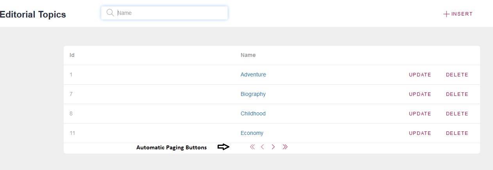
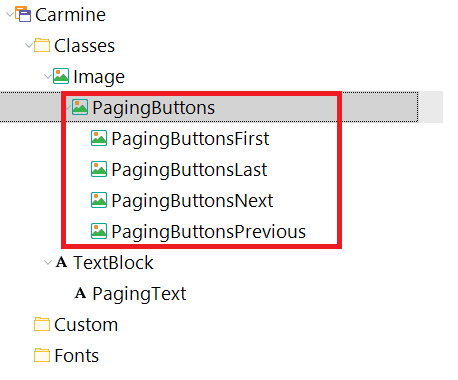

Automatic paging implies that paging is implemented in the generated code without the need to program anything. For Web applications, when the Rows property for a grid is anything other than zero, GeneXus will perform automatic paging. That is, the paging buttons (FirstPage, PreviousPage, NextPage, and LastPage) are automatically added to the grid footer and they will behave as expected.  However, if any of those events is included explicitly in the GeneXus code, automatic paging will not be available. See Grid paging on the Web for details on programming paging manually. Styles for paging buttons in Web applicationsIn the Theme, there is a class called PagingButtons (child of Image) where you can configure the appearance of the automatic paging buttons.  Notes
ScopeControls: See Also
|
| Backlinks | ||
| Fixed Grid header with vertical scroll | Category:Grid control | |
| Grid paging on the Web | Infinite scrolling | Load event |
| Paging in apps |